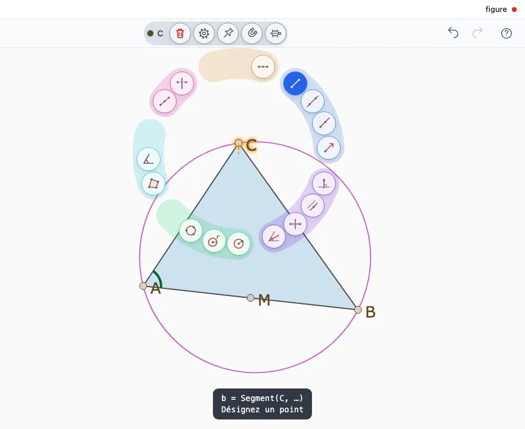

Construire au geste
Toucher la figure
| Endroit touché | Résultat |
|---|---|
| le vide | point libre (sur le sol z = 0 en 3D) |
| près d’un croisement | intersection des deux objets, qui brillent au survol (à moins de 24 px) |
| un objet | sélection et anneau de ses outils |
| le vide, anneau ouvert | fermeture de l’anneau, sans créer de point |
Un texte, une expression ou un curseur sont seulement sélectionnés : ils n’ont pas d’anneau.
L’anneau d’outils

L’anneau ne montre que les outils applicables à l’objet touché. Chaque outil occupe toujours la même place ; un outil inapplicable laisse sa place vide. Familles, dans le sens horaire depuis le haut :
| Famille | Outils |
|---|---|
| Points | point sur objet, intersection, milieu ou centre |
| Droites | segment, droite, demi-droite, vecteur |
| Constructions | perpendiculaire, parallèle, médiatrice, bissectrice |
| Cercles | centre et point, centre et rayon, trois points, sphère (3D) |
| Polygones, angles, lieux | polygone, angle, lieu |
| Transformations | symétries centrale et axiale |
Survoler un outil affiche dans la consigne la ligne qu’il écrira
et l’argument attendu : b = Segment(C, …), «
Désignez un point ». Les actions sur l’objet lui-même
(supprimer, régler…) sont dans la
zone contextuelle
de la barre.
Désigner les arguments
L’outil choisi, un aperçu de l’objet suit le pointeur et les objets acceptés brillent au survol. Là où un point est attendu, on désigne au choix un point existant, un objet (point sur objet créé), un croisement (intersection créée) ou le vide (point libre créé).
- Polygone : les sommets, puis de nouveau le premier.
- Cercle (centre et rayon) : créé d’un clic, rayon d’environ 150 px arrondi à deux chiffres ; glisser le cercle change le rayon.
- Lieu : proposé sur un point qui dépend d’un point sur objet ; créé d’un clic.
- Angle et bissectrice : un point du premier côté, le sommet, un point du second côté.
Cas particuliers
- Objets superposés : un menu donne la ligne de chacun ; son survol fait briller l’objet. Un point l’emporte toujours, et un croisement donne directement l’intersection.
- Au doigt : pendant un outil, le doigt appuyé montre l’aperçu sans rien déplacer et désigne au lever. On peut appuyer sur l’icône et glisser jusqu’à la cible d’un seul geste.
- Bord de la fenêtre : l’anneau se décale pour tenir entier, relié à l’objet par un pointillé ; il suit l’objet si la figure bouge.
- Abandonner : Échap ou ✕ de la consigne.
- Déplacer : pendant un outil, glisser vise ; le bouton droit déplace toujours objets et vue.